Lo que NO he podido hacer o necesita una decisión tuya está en docs/dias/DECISIONES_V44.md (el billete con QR, los sitios nuevos de Roma y el mapa del alojamiento).
Qué pasaba: con la ubicación en Barcelona y el viaje en Roma, HOY mandaba el Coliseo y el Foro a «Lugares pendientes» («Ya ha cerrado» a las 8:30) y ponía «A pie · 10407 min»: sumaba el camino desde donde estabas. Le habría pasado a cualquiera en su casa o en el aeropuerto.
Qué pasa ahora: el GPS solo cuenta para minutos y cierres si estás en la ruta (a 30 minutos andando de la parada). Si no, HOY cuenta con el tiempo del plan: «19 min · Del alojamiento al Coliseo» o «Del Panteón a la Fontana de Trevi». Si estás a más de 50 km del viaje, la caja dice «—» y «Estás lejos», con el recuadro «Estás lejos de Roma. Cuando llegues, contaremos desde donde estés.» (sin botones ni «Ya he llegado»). Nada se va a pendientes ni sale vacío por estar lejos. La app se entera sola al acercarte.
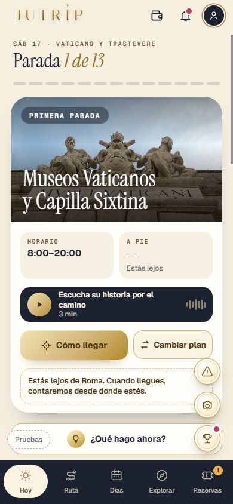
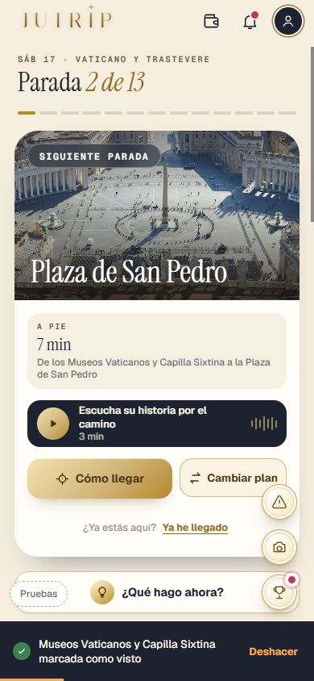
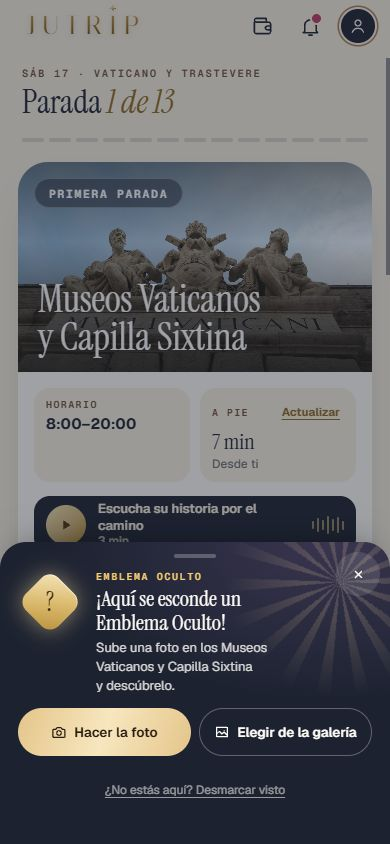
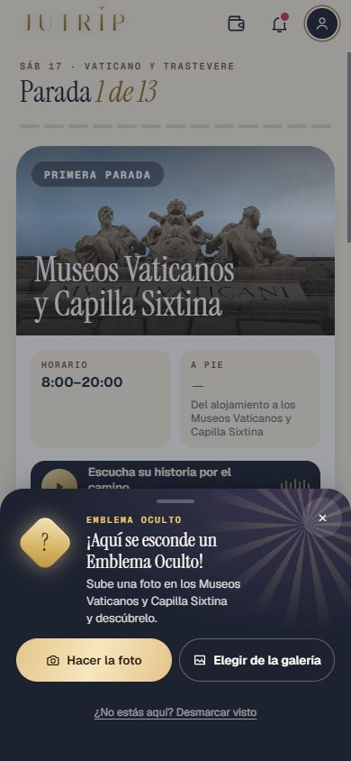
Dos cajas una al lado de otra: «HORARIO» (con «Cerrado ahora · abre a las 9:00») y la de minutos. «Escucha su historia por el camino · 3 min» va en azul oscuro desde el principio; al darle al play solo cambia ▶ por ❚❚ y se mueven las ondas.
«Parada saltada» ya lleva [Deshacer] y sale abajo, sobre el menú. Todo lo que cambia la ruta lo lleva (saltar, quitar, pasar a otro día, pasar todos, recuperar hoy, ya lo visité). Juntar avisos es solo para los de arriba. Al saltar se mira todo el día de golpe: un solo aviso («Han cerrado A y B»).
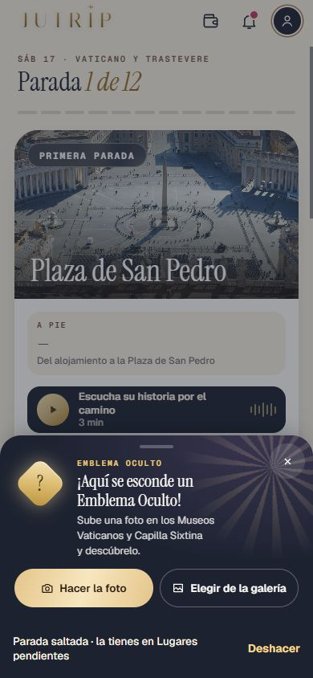
El «···» abre la misma hoja que el de una parada en DÍAS: «PARADA» y el nombre, y tarjetas grandes con icono, título y subtítulo (Recuperar hoy, solo si sigue abierto; Ya lo visité; Quitar, en rojo).
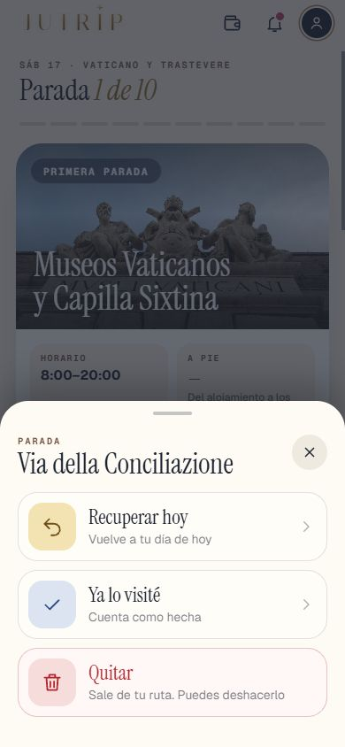
El título según la hora: «Desayunar cerca de ti» (hasta las 11:30, con [Café] marcado), «Comer…» (hasta las 17:00) y «Cenar…». Sin ubicación: «No tienes la ubicación activada · Usar mi ubicación», sin nombrar ningún sitio; lista y mapa desde la parada de ahora. Debajo del nombre, el tipo («Cafetería», «Trattoria»). Si no hay nada abierto, nunca vacío: «A esta hora aún no han abierto. Los más cercanos:» con «Abre a las 7:30». Abajo, [Ver todos en Explorar] (con el subfiltro).
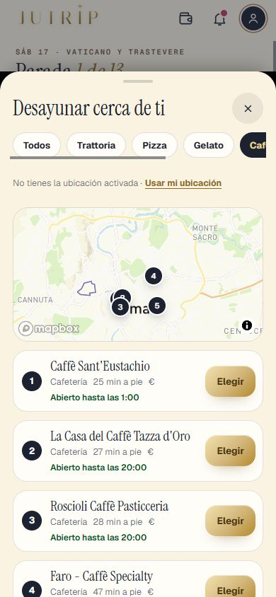
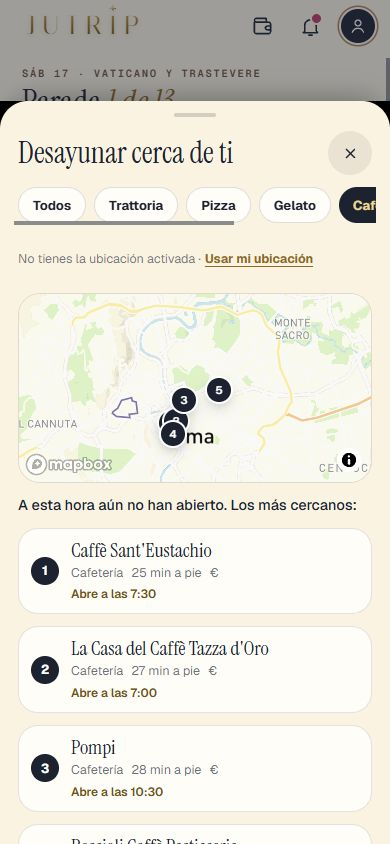
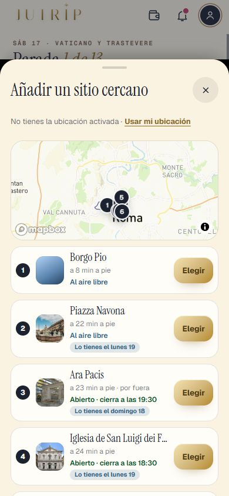
El mapa para confirmar el pin no está hecho: según las condiciones de Mapbox los resultados de búsqueda son temporales y no se pueden guardar. Lo que sí: «Cómo llegar» y «Volver al alojamiento» llevan ahora la ciudad del viaje en la dirección, para que Google no la ponga en Mataró. Decisión tuya en DECISIONES_V44.md.
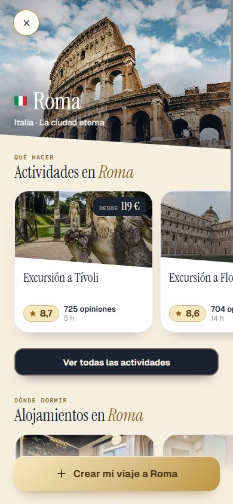
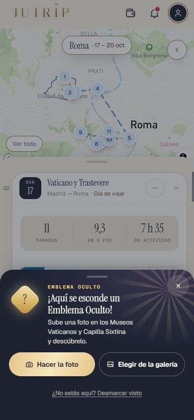
Pruebas de la V44 (24-nov-2026), con el Vite estable y la API (con DESTINOS_OCULTOS='-' para las de Lanzarote; normal para Jutrip): pruebaV44 (nueva) ............................ 43 comprobaciones · 0 fallos pruebaV43 .................................... 41 · 0 pruebaJutrip ................................. 130 · 0 pruebaV36_cliente ............................ 28 · 0 (antes 2 fallos: la prueba leía la dirección real de Supabase) pruebaV36_servidor ........................... 28 · 0 pruebaV36C ................................... 122 · 0 pruebaFase6y_manual .......................... 1722 · 0 (antes 56 fallos de «[3 horas]») pruebaTanda10N10_explorar .................... 44 · 0 (antes 1) pruebaTanda10N_propuesta ..................... 59 · 0 (antes 3) pruebaV2Hoy .................................. 149 · 0 pruebaTandaHOY1_A ............................ 116 · 0 pruebaTandaHOY1_C ............................ 124 · 0 pruebaTandaHOY2_A ............................ 86 · 0 pruebaTandaHOY2_B ............................ 126 · 0 pruebaTandaHOY2_C ............................ 132 · 0 pruebaTandaHOY2b_E ........................... 142 · 0 Sin pasar esta tanda: pruebaTandaHOY2b_D (1 fallo de la V43: mira data/dias/roma/_fotos.json, no es de esta tanda).